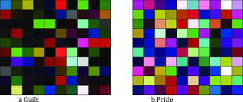

THE STUDY OF COLOR
Color
Color is what we see when light shines on an object and reflects into our eyes. It is the visual effect of light that gives objects their appearance. For example, when we say something is red or blue, we are talking about its color.

Color is an important part of art. It adds beauty, meaning, and emotions to drawings, paintings, designs, clothes, crafts, and decorations.
Classification of Colors
Colors are divided into three main groups:
- Primary Colors These are the basic colors that cannot be made by mixing other colors.
- Examples: Red, Blue, Yellow
- Secondary Colors : These are made by mixing two primary colors together in equal amounts.
Examples:
- Red + Yellow = Orange
- Blue + Yellow = Green
- Red + Blue = Purple (Violet)
- Tertiary Colors : These are made by mixing a primary color with a nearby secondary color.
Tertiary Colors
- Yellow + Green = Yellow-Green
- Red + Orange = Red-Orange
- Blue + Purple = Blue-Purple
Mixing of Colors
Meaning of Colour Mixing
Colour mixing is the act of combining two or more colours together to create a new colour. Artists and designers mix colours to get the exact colour they need for painting, craft, and decoration. Mixing colours helps us understand how colours work together and how to get many colours from just a few.
Types of Colours in Mixing
- Primary Colours – These are Red, Blue, and Yellow; they are the main colours and cannot be made by mixing other colours.
- Secondary Colours – These are Orange, Green, and Purple; they are made by mixing two primary colours in equal parts.
- Tertiary Colours – These are made by mixing one primary colour with a nearby secondary colour, e.g., Red + Orange = Red-Orange.
Tools Used for Colour Mixing
Artists use paint brushes, palettes, water, and mixing trays to mix colours. They can also use their fingers or sponges in craftwork.
Importance of Colour Mixing in Art and Craft
- It helps artists get many colours from a few.
- It allows for shading and highlighting in drawings.
- It brings creativity and beauty to artworks.
- It helps in designing patterns and decorations.
- It gives depth and feeling to a painting.
Where Colour Mixing Is Used
- In painting pictures and artworks.
- In tie and dye work.
- In decorating houses and classrooms.
- In craft work like posters, greeting cards, and textile designs.
Warm and Cool Colors
- Warm Colors: Red, Orange, Yellow – They look hot and give a feeling of energy and excitement.
- Cool Colors: Blue, Green, Purple – They look calm and give a feeling of peace and coolness.
Colour Wheel
Meaning of Colour Wheel
A colour wheel is a round chart that shows how colours are arranged and how they relate to each other.
Purpose of the Colour Wheel
- It helps artists and designers to understand how colours mix and match.
- It shows the relationship between primary, secondary, and tertiary colours.
- It helps us to choose colours that go well together (called colour harmony).
Parts of the Colour Wheel
- Primary Colours These are Red, Blue, and Yellow – they are the main colours used to make other colours.
- Secondary Colours These are Orange, Green, and Purple – they are made by mixing two primary colours.
- Tertiary Colours These are made by mixing a primary colour with a nearby secondary colour, e.g., Yellow + Green = Yellow-Green.
Arrangement on the Colour Wheel
The colour wheel is divided into 12 parts: 3 primary colours, 3 secondary colours, and 6 tertiary colours. The colours are placed in a circle in a way that shows how they are made and how they relate.
Types of Colour Relationships on the Wheel
- Complementary Colours – These are colours that are opposite each other on the colour wheel, like Red and Green; they create strong contrast.
- Analogous Colours – These are colours that are next to each other on the wheel, like Blue, Blue-Green, and Green; they blend well together.
- Triadic Colours – These are three colours spaced evenly on the wheel, like Red, Yellow, and Blue; they give colour balance.
- Monochromatic Colours – These are different shades and tones of one single colour, like Light Blue, Blue, and Dark Blue.
How to make a simple color wheel
- Draw a circle and divide it into 12 equal parts.
- Place the primary colors in a triangle.
- Add secondary colors between the primaries.
- Add tertiary colors between each primary and secondary.
Uses of Colour
- Color is use To decorate artworks and crafts.
- Color is use To show emotions (e.g., red for love, blue for sadness).
- Color is use For traffic signs and warnings (e.g., red for stop).
- Color is use In fashion and interior design.
- Color is use For advertising and branding.
- Color is use In cultural events like weddings and festivals.
Sources of Colour
- Natural Sources : These are colors gotten from nature:
- Plants (e.g., leaves, roots).
- Soil and clay.
- Fruits.
- Flowers.
- Animals (like snails for purple dye).
- Sunlight (rainbow colors).
- Artificial Sources : These are man-made sources of color:
- Paints.
- Dyes.
- Crayons.
- Inks.
- Colored pencils.
- Digital screens (TV, phone).
Local Sources of Colour (Natural Dye)
In Nigeria and other parts of Africa, people get color from natural things like:
- Leaves – e.g., Ewe Epakun for green/brown dye.
- Tree barks – e.g., Camwood for red.
- Seeds and roots – for blue and brown.
- Clay and mud – for earthy colors.
Colour Application in Crafts
Colour application in craft work simply means the use of colors to decorate or design a craft item. It involves choosing the right colors and using them in the right way to bring life to the artwork. When colors are applied well in craft work, they make the object look more attractive, meaningful, and professional.
It also helps in expressing culture, emotions, tradition, and identity. A dull object can look very beautiful and colorful when the right colors are used creatively.
Techniques of Colour Application in Craft Work
- Painting – This involves using a brush or any tool to apply liquid paint on surfaces like paper, wood, calabash, wall, or canvas.
- Dyeing (Tie and Dye) – This is applying color to fabric using dyes, where parts of the fabric are tied or folded before dyeing to form beautiful patterns.
- Coloring – This means using crayons, color pencils, markers, or chalk to add color to drawings or craft items.
- Printing – This involves using stamps, stencils, or blocks to apply color designs or patterns on surfaces like paper or fabric.
- Spraying – This is applying color evenly on a surface using spray paint or color sprayed from a can or bottle.
Types of Crafts That Use Colour Application
- Paper crafts – such as cards, masks, paper flowers, and paper beads.
- Textile crafts – like tie and dye, batik, and embroidery.
- Wood crafts – such as carved items that are painted.
- Pottery and clay crafts – where pots and vases are decorated with colors.
- Beadwork – where colored beads are arranged to form patterns.
- Calabash decoration – using paint or natural dye to beautify calabashes.
Materials Used for Colour Application in Craft
- Paint (poster color, acrylic, emulsion).
- Brushes.
- Color pencils.
- Crayons.
- Markers.
- Dyes (both local and factory-made).
- Spray cans.
- Palettes for mixing colors.
- Fabric and other craft surfaces.
Importance of Colour Application in Craft
- Enhances beauty – Color makes the work more attractive.
- Creates interest – People are drawn to colorful items.
- Expresses emotion and meaning – Color can show feelings like happiness, sorrow, or excitement.
- Shows culture and identity – Certain colors are used for traditional designs.
- Improves creativity – Artists learn how to mix and use color skillfully.
- Adds value to craft items – Well-colored craft can be sold at higher prices.
Psychological Effects of Color
Each color can create different feelings in people:
- Red: Love, anger, danger.
- Blue: Calm, peace, sadness.
- Yellow: Joy, warning, brightness.
- Green: Nature, life, growth.
- Black: Power, mystery, mourning.
- White: Purity, peace, neatness.